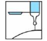

RÉSUMÉ DES CARACTÉRISTIQUES DU PRODUIT
ANSM - Mis à jour le : 18/04/2012
FRAGMINE 5 000 U.I. anti-Xa/0,2 ml, solution injectable en seringue préremplie
2. COMPOSITION QUALITATIVE ET QUANTITATIVE
Daltéparine sodique ............................................................................................................... 5000 UI anti-Xa
Pour une seringue préremplie de 0,2 ml.
Pour la liste complète des excipients, voir rubrique 6.1.
Solution injectable en seringue préremplie.
4.1. Indications thérapeutiques
Cette héparine est une héparine de bas poids moléculaire (HBPM).
Ses indications sont les suivantes:
· Traitement prophylactique de la maladie thrombo-embolique veineuse en chirurgie, dans les situations à risque modéré ou élevé ainsi qu'en chirurgie oncologique.
· Traitement prophylactique des thromboses veineuses profondes chez les patients alités pour une affection médicale aiguë:
o une insuffisance cardiaque de stade III ou IV de la classification NYHA,
o une insuffisance respiratoire aiguë,
o ou un épisode d'infection aiguë ou d'affection rhumatologique aiguë, associé à au moins un autre facteur de risque thromboembolique veineux.
· Prévention de la coagulation du circuit de circulation extracorporelle au cours de l'hémodialyse (séance en général d'une durée ≤ 4 heures).
4.2. Posologie et mode d'administration
VOIE SOUS-CUTANEE (en dehors de l'indication en hémodialyse).
Cette présentation est adaptée à l'adulte.
Ne pas injecter par voie I.M.
1 ml de FRAGMINE 5 000 U.I. anti-Xa/0,2 ml correspond environ à 25 000 U.I. anti-Xa de daltéparine sodique.
Les seringues préremplies à 2 500 U.I. et 5 000 U.I. anti-Xa de daltéparine se présentent sous un volume identique (0,2 ml).
Utilisation du système de sécurité de l'aiguille (voir rubrique 6.6).
Technique de l'injection sous-cutanée
· Ne pas purger la bulle d'air.
· L'injection sous-cutanée de la daltéparine doit être réalisée de préférence chez le patient en décubitus, dans le tissu cellulaire sous-cutané de la ceinture abdominale antérolatérale et postérolatérale, alternativement du côté droit et du côté gauche.
· L'aiguille doit être introduite perpendiculairement et non tangentiellement, sur toute sa longueur, dans l'épaisseur d'un pli cutané réalisé entre le pouce et l'index de l'opérateur. Ce pli cutané doit être maintenu pendant toute la durée de l'injection.
Recommandation générale
La surveillance régulière de la numération plaquettaire est impérative en raison du risque de thrombopénie induite par l'héparine (TIH) (voir rubrique 4.4).
Traitement prophylactique de la maladie thrombo-embolique veineuse en chirurgie
Ces recommandations s'appliquent en règle générale aux interventions chirurgicales effectuées sous anesthésie générale.
Pour les techniques de rachianesthésie et d'anesthésie péridurale, l'intérêt de l'injection préopératoire doit être évalué en raison du risque théorique accru d'hématome intra-rachidien (voir rubrique 4.4 Précautions d'emploi).
Fréquence d'administration: 1 injection par jour.
Dose administrée: elle doit être fonction du niveau de risque individuel, lié au patient et au type de chirurgie.
· Situation à risque thrombogène modéré:
Dans le cas d'une chirurgie à risque thrombogène modéré et lorsque les patients ne présentent pas de risque thrombo-embolique élevé, la prévention efficace de la maladie thrombo-embolique est obtenue par une injection quotidienne d'une dose de 2500 UI anti-Xa.
Le schéma thérapeutique étudié comporte une première injection effectuée 2 heures avant l'intervention.
· Situation à risque thrombogène élevé: chirurgie de la hanche et du genou:
La posologie est de 5000 U.I. anti-Xa à raison d'une injection quotidienne.
La première injection sera pratiquée:
o soit dans les 2 heures avant l'intervention dans le cas d'une moitié de dose (2500 U.I. anti-Xa); la même dose sera renouvelée 12 heures plus tard.
o soit le soir précédant l'intervention dans le cas d'une dose totale (5 000 U.I. anti-Xa); la même chose sera renouvelée 24 heures plus tard.
· Autres situations:
Lorsque le risque thrombo-embolique lié au type de chirurgie (notamment cancérologique) et/ou au patient (notamment antécédents de maladie thrombo-embolique) paraît majoré, on peut envisager le recours à une posologie prophylactique identique à celle de l'orthopédie à risque élevé (hanche, genou).
En chirurgie oncologique, la daltéparine a établi son efficacité à la posologie de 5000 U.I. anti-Xa par jour, selon le même schéma posologique qu'en chirurgie orthopédique de hanche.
o Durée du traitement:
Le traitement par HBPM, accompagné des techniques habituelles de contention élastique des membres inférieurs, doit être maintenu jusqu'à déambulation active et complète du patient:
§ en chirurgie générale, la durée du traitement par HBPM doit être inférieure à 10 jours, en dehors d'un risque thromboembolique veineux particulier lié au patient (voir rubrique 4.4 Précautions d'emploi, surveillance plaquettaire);
§ l'intérêt d'un traitement prophylactique en chirurgie orthopédique de hanche, par une injection de daltéparine sodique à la dose de 5 000 U.I. anti-Xa/j durant 35 jours après l'intervention, a été établi;
§ si le risque thromboembolique veineux persiste au delà de la période de traitement recommandée, il est nécessaire d'envisager la poursuite de la prophylaxie, notamment par les anticoagulants oraux.
§ Toutefois, le bénéfice clinique d'un traitement à long terme par héparine de bas poids moléculaire ou par anti-vitamine K n'est pas évalué à l'heure actuelle.
Traitement prophylactique en milieu médical
Dose administrée: la posologie est de 5000 U.I. anti-Xa/0,2 ml, à raison d'une injection sous-cutanée par jour.
Durée du traitement: le bénéfice du traitement a été établi pour une durée de traitement comprise entre 12 et 14 jours. Aucune donnée n'est actuellement disponible concernant l'efficacité et la sécurité d'une prophylaxie prolongée au-delà de 14 jours. Si les facteurs de risque thromboemboliques persistent, il est nécessaire d'envisager un traitement prophylactique prolongé, notamment par anti-vitamine K.
Prévention de la coagulation du circuit de circulation extracorporelle/hémodialyse
INJECTION PAR VOIE INTRAVASCULAIRE (dans la ligne artérielle du circuit de la dialyse).
Chez les patients bénéficiant de séances d'hémodialyse itératives, la prévention de la coagulation dans le circuit d'épuration extra-rénale est obtenue en injectant une dose initiale de 5 000 U.I. anti-Xa dans la ligne artérielle du circuit de dialyse, en début de séance.
Cette dose, administrée en bolus intravasculaire unique, n'est adaptée que pour les séances de dialyse de 4 heures ou moins. Elle est susceptible d'être modifiée ultérieurement, en raison de l'importante variabilité intra et interindividuelle et de la durée de la séance.
De plus, les posologies recommandées pour des séances > 4 heures sont:
· dose initiale: injection directe de 30 à 35 U.I. anti-Xa/kg
· dose d'entretien: perfusion de 10 à 15 U.I. anti-Xa/kg/h.
Ce médicament NE DOIT PAS ETRE UTILISE dans les situations suivantes:
· hypersensibilité à la daltéparine;
· antécédents de thrombopénie induite par l'héparine (ou TIH) grave de type II induite sous héparine non fractionnée ou sous héparine de bas poids moléculaire (voir rubrique 4.4 Précautions d'emploi);
· manifestations ou tendances hémorragiques liées à des troubles de l'hémostase (les coagulations intravasculaires disséminées peuvent être une exception à cette règle, lorsqu'elles ne sont pas liées à un traitement par l'héparine - voir rubrique 4.4 Précautions d'emploi);
· lésion organique susceptible de saigner.
Ce médicament est GENERALEMENT DECONSEILLE dans les cas suivants:
· insuffisance rénale sévère, (clairance de la créatinine de l'ordre de 30 ml/min, selon l'estimation de la formule de Cockroft, voir rubrique 4.4),
· dans les 24 premières heures qui suivent une hémorragie intracérébrale.
De plus ce médicament à doses préventives est GENERALEMENT DECONSEILLE, chez le sujet âgé de plus de 65 ans, en association avec (voir rubrique 4.5):
1. l'acide acétylsalicylique aux doses antalgiques, anti-pyrétiques et anti-inflammatoires,
2. les AINS(voie générale),
3. le dextran 40(voie parentérale).
4.4. Mises en garde spéciales et précautions d'emploi
Bien que les différentes spécialités d'héparines de bas poids moléculaire aient toutes des concentrations exprimées en unités internationales anti-Xa, leur efficacité ne se limite pas qu'à cette activité anti-Xa. Il serait dangereux de substituer le schéma posologique d'une HBPM par celui d'une autre HBPM ou par celui d'un autre polysaccharide de synthèse, chaque schéma ayant été validé par des études cliniques spécifiques. Il y a donc lieu d'être particulièrement vigilant et de respecter le mode d'emploi spécifique de chacune des spécialités.
Mises en garde spéciales
Risque hémorragique
Il est impératif de respecter les schémas thérapeutiques recommandés (posologies et durées de traitement). Dans le cas contraire, des accidents hémorragiques peuvent s'observer, surtout chez les sujets à risque (sujets âgés, insuffisants rénaux…).
Les accidents hémorragiques graves ont notamment été observés:
· chez le sujet âgé, notamment du fait de la détérioration de la fonction rénale liée à l'âge,
· en cas d'insuffisance rénale,
· en cas de poids inférieur à 40 Kg,
· en cas de traitement prolongé au-delà de la durée moyenne préconisée de 10 jours,
· en cas de non-respect des modalités thérapeutiques conseillées (notamment durées de traitement et adaptation de la dose en fonction du poids pour les traitements curatifs),
· en cas d'association à des médicaments majorant le risque hémorragique (voir rubrique 4.5).
Dans tous les cas, une surveillance particulière est indispensable chez les patients âgés et/ou insuffisants rénaux, ainsi qu'en cas de traitement prolongé au-delà de 10 jours.
Pour détecter une accumulation, une mesure de l'activité anti-Xa peut-être utile dans certains cas (voir Précautions d'emploi/Surveillance biologique).
Risque de thrombopénie induite par l'héparine (TIH)
Devant un patient traité par HBPM (à dose curative ou préventive) qui présente un événement thrombotique, tel que:
· une aggravation de la thrombose pour laquelle il est traité,
· une phlébite,
· une embolie pulmonaire,
· une ischémie aiguë des membres inférieurs,
· voire un infarctus du myocarde ou un accident vasculaire cérébral ischémique, il faut systématiquement penser à une thrombopénie induite par l'héparine (TIH) et faire pratiquer en urgence une numération des plaquettes (voir Précautions d'emploi).
Utilisation chez l'enfant
En l'absence de données, l'utilisation des HBPM chez l'enfant n'est pas recommandée.
· Prophylaxie médicale
o dans le cas d'un épisode aigu d'une maladie infectieuse ou rhumatologique, le traitement prophylactique n'est justifié qu'en cas d'association à au moins un des facteurs de risque thrombo-embolique veineux suivants:
§ âge > 75 ans,
§ cancer,
§ antécédents thromboemboliques veineux,
§ obésité,
§ traitement hormonal,
§ insuffisance cardiaque,
§ insuffisance respiratoire chronique;
o en prophylaxie médicale, l'expérience disponible chez les patients âgés de plus de 80 ans et de poids inférieur à 40 kg est très limitée.
Précautions d'emploi
Fonction rénale
Avant d'instaurer un traitement par HBPM, il est indispensable d'évaluer la fonction rénale, et plus particulièrement chez le sujet âgé à partir de 75 ans, en calculant la clairance de la créatinine (Clcr) à l'aide de la formule de Cockroft, en disposant d'un poids récent du patient:
Chez l'homme, Clcr = (140-âge) x poids / (0,814 x créatininémie) avec l'âge exprimé en années, le poids en kg, la créatininémie en µmol/l.
Cette formule doit être corrigée pour les femmes en multipliant le résultat par 0,85.
Lorsque la créatine est exprimée en mg/ml, multiplier par un facteur 8,8.
La mise en évidence d'une insuffisance rénale sévère (Clcr de l'ordre de 30 ml/min) contre-indique la prescription d'HBPM dans les indications curatives (voir rubrique 4.3).
Surveillance biologique
Surveillance plaquettaire des patients sous HBPM et risque de Thrombopénie Induite par l'Héparine (ou TIH de type II)
· Les HBPM peuvent induire des TIH de type II, thrombopénies graves d'origine immunologique, responsables d'accidents thromboemboliques artériels ou veineux pouvant menacer le pronostic vital ou fonctionnel des patients (voir aussi rubrique 4.8). Afin de pouvoir détecter les TIH de manière optimale, il est nécessaire de surveiller les patients de la manière suivante:
o Dans un contexte chirurgical ou traumatique récent (dans les 3 mois):
Une surveillance biologique systématique est nécessaire, que l'indication du traitement soit préventive ou curative, chez tous les patients, compte tenu de l'incidence des TIH > 0.1 %, voire >1 %, en chirurgie et en traumatologie. Elle consiste à pratiquer une numération plaquettaire:
§ avant le traitement par HBPM ou au plus tard dans les 24 heures après l'instauration du traitement,
§ puis 2 fois par semaine pendant un mois (période de risque maximal),
§ puis une fois par semaine jusqu'à l'arrêt du traitement en cas de traitement prolongé.
o En dehors d'un contexte chirurgical ou traumatique récent (dans les 3 mois):
Une surveillance biologique systématique est nécessaire que l'indication du traitement soit préventive ou curative, selon les mêmes modalités qu'en chirurgie et en traumatologie (voir paragraphe ci-dessus) chez les patients:
§ ayant des antécédents d'exposition à l'HNF ou aux HBPM dans les 6 derniers mois, compte tenu de l'incidence des TIH > 0.1 %, voire >1 %,
§ atteints de comorbidités importantes, compte tenu de la gravité potentielle des TIH chez ces patients.
Dans les autres cas, compte tenu de l'incidence des TIH plus faible (< 0.1 %), la surveillance de la numération plaquettaire peut être réduite à:
§ une seule numération plaquettaire en début de traitement ou au plus tard dans les 24 heures après l'instauration du traitement,
§ une numération plaquettaire en cas de manifestation clinique évocatrice de TIH (tout nouvel épisode thromboembolique artériel et/ou veineux, toute lésion cutanée douloureuse au site d'injection, toute manifestation allergique ou anaphylactoïde sous traitement). Le patient doit être informé de la possibilité de survenue de ces manifestations et de la nécessité de prévenir son médecin référent le cas échéant.
· Une TIH doit être suspectée devant un nombre de plaquettes < 150.000/mm3 (ou 150 Giga/L) et/ou une chute relative des plaquettes de l'ordre de 50 %, voire 30 %, par rapport à la numération plaquettaire avant tout traitement. Elle apparaît essentiellement entre le 5ème et le 21ème jour suivant l'instauration du traitement héparinique (avec un pic de fréquence aux environs du 10ème jour). Mais elle peut survenir beaucoup plus précocement, lorsque des antécédents de thrombopénie sous héparine existent, et des cas isolés ont été rapportés au delà de 21 jours. De tels antécédents seront donc systématiquement recherchés au cours d'un interrogatoire approfondi avant le début du traitement. Dans tous les cas, l'apparition d'une TIH constitue une situation d'urgence et nécessite un avis spécialisé. Toute baisse significative (30 à 50 % de la valeur initiale) de la numération plaquettaire doit donner l'alerte, avant même que cette valeur n'atteigne un seuil critique. La constatation d'une diminution du nombre de plaquettes impose dans tous les cas:
1- un contrôle immédiat de la numération;
2- la suspension du traitement héparinique, si la baisse est confirmée, voire accentuée, lors de ce contrôle, en l'absence d'une autre étiologie évidente.
Un prélèvement doit être réalisé sur tube citraté pour réaliser des tests d'agrégation plaquettaire in vitro et des tests immunologiques. Mais, dans ces conditions, la conduite à tenir immédiate ne repose pas sur le résultat de ces tests d'agrégation plaquettaire in vitro ou immunologiques, car seuls quelques laboratoires spécialisés les pratiquent en routine et le résultat n'est obtenu, dans le meilleur des cas, qu'au bout de plusieurs heures. Ces tests doivent cependant être réalisés pour aider au diagnostic de cette complication, car en cas de poursuite du traitement héparinique, le risque de thrombose est majeur.
3- la prévention ou le traitement des complications thrombotiques de la TIH. Si la poursuite de l'anticoagulation semble indispensable, l'héparine doit être relayée par une autre classe d'antithrombotiques: danaparoïde sodique ou lepirudine, prescrits suivant les cas à dose préventive ou curative.
Le relais par les AVK ne sera pris qu'après normalisation de la numération plaquettaire, en raison du risque d'aggravation du phénomène thrombotique par les AVK.
Relais de l'héparine par les AVK.
· Renforcer alors la surveillance clinique et biologique (temps de Quick exprimé en INR) pour contrôler l'effet des AVK.
· En raison du temps de latence précédant le plein effet de l'antivitamine K utilisé, l'héparine doit être maintenue à dose équivalente pendant toute la durée nécessaire pour que l'INR soit dans la zone thérapeutique souhaitable de l'indication lors de deux contrôles successifs.
Contrôle de l'activité anti-Xa
· La majorité des études cliniques qui ont démontré l'efficacité des HBPM ayant été conduites avec une dose adaptée au poids et sans surveillance biologique particulière, l'utilité d'une surveillance biologique n'a pas été établie pour apprécier l'efficacité d'un traitement par HBPM.
· Toutefois, la surveillance biologique par détermination de l'activité anti-Xa peut être utile pour gérer le risque hémorragique, dans certaines situations cliniques fréquemment associées à un risque de surdosage. Ces situations concernent essentiellement les indications curatives des HBPM, en raison des doses administrées, quand existe:
o une insuffisance rénale légère à modérée avec clairance estimée selon la formule de Cockroft entre 30 ml/min à 60 ml/min: en effet, contrairement à l'héparine standard non fractionnée, les HBPM s'éliminent en grande partie par le rein et toute insuffisance rénale peut conduire à un surdosage relatif. L'insuffisance rénale sévère constitue quant à elle, une contre-indication à l'utilisation des HBPM aux doses curatives (voir rubrique 4.3);
o un poids extrême (maigreur voire cachexie, obésité);
o une hémorragie inexpliquée.
A l'inverse, la surveillance biologique n'est pas recommandée aux doses prophylactiques si le traitement par HBPM est conforme aux modalités thérapeutiques conseillées (en particulier pour la durée du traitement), ainsi qu'au cours de l'hémodialyse.
Afin de détecter une possible accumulation après plusieurs administrations, il est le cas échéant recommandé de prélever le sang du patient au pic maximal d'activité (selon les données disponibles), c'est à dire:
· environ 4 heures après la 3ème administration, lorsque le médicament est délivré en 2 injections SC par jour.
La répétition du dosage de l'activité anti-Xa pour mesurer l'héparinémie, par exemple tous les 2 à 3 jours, sera discutée au cas par cas, en fonction des résultats du dosage précédent, et une éventuelle modification de la dose d'HBPM sera envisagée.
Pour chaque HBPM et chaque schéma thérapeutique, l'activité anti-Xa générée est différente.
A titre indicatif, d'après les données disponibles, la moyenne observée (± écart-type) à la 4ème heure pour la daltéparine sodique délivrée à la dose de 100 U.I. anti-Xa/kg en 2 injections par 24 h a été de 0,59 ± 0,25; 0,60 ± 0,21; 0,62 ± 0,22; 0,67 ± 0,21; 0,69 ± 0,26 UI anti-Xa respectivement au jour 2, 4, 6, 8 et 10 du traitement.
Ces valeurs moyennes ont été observées au cours des essais cliniques pour les dosages d'activité anti-Xa effectués par méthode chromogénique (amidolytique).
Temps de céphaline avec activateur (TCA)
Certaines HBPM allongent modérément le TCA. En l'absence de pertinence clinique établie, toute surveillance du traitement fondée sur ce test est inutile.
Réalisation d'une rachianesthésie/anesthésie péridurale en cas de traitement préventif par HBPM.
· Comme avec les autres anticoagulants, de rares cas d'hématomes intra-rachidiens entraînant une paralysie prolongée ou permanente ont été rapportés lors de l'administration d'HBPM au décours d'une rachianesthésie ou d'une anesthésie péridurale.
Le risque d'hématome intra-rachidien paraît plus important avec la péridurale avec cathéter, qu'avec la rachianesthésie.
Le risque de ces événements rares peut être augmenté par l'utilisation post-opératoire prolongée de cathéters périduraux.
· Si un traitement pré-opératoire par HBPM est nécessaire (alitement prolongé, traumatisme) et que le bénéfice d'une anesthésie loco-régionale rachidienne a été soigneusement évalué, cette technique pourra être utilisée chez un patient ayant reçu une injection pré-opératoire d'HBPM, à condition de respecter un délai d'au moins 12 h entre l'injection d'héparine et la réalisation de l'anesthésie rachidienne. Une surveillance neurologique attentive est recommandée, en raison du risque d'hématome intra-rachidien. Dans la quasi-totalité des cas, le traitement prophylactique par HBPM pourra être débuté dans les 6 à 8 heures qui suivent la réalisation de la technique ou l'ablation du cathéter, sous couvert d'une surveillance neurologique.
Une attention particulière sera portée en cas d'association avec d'autres médicaments interférant avec l'hémostase (notamment anti-inflammatoires non stéroïdiens, aspirine).
Situations à risque
La surveillance du traitement sera renforcée dans les cas suivants:
· insuffisance hépatique,
· antécédents d'ulcères digestifs ou de toute autre lésion organique susceptible de saigner,
· maladies vasculaires de la choriorétine,
· en période post-opératoire après chirurgie du cerveau et de la mœlle épinière,
· la réalisation d'une ponction lombaire devra être discutée en tenant compte du risque de saignement intra-rachidien. Elle devra être différée chaque fois que possible.
4.5. Interactions avec d'autres médicaments et autres formes d'interactions
Certains médicaments ou classes thérapeutiques sont susceptibles de favoriser la survenue d'une hyperkaliémie: les sels de potassium, les diurétiques hyperkaliémiants, les inhibiteurs de l'enzyme de conversion, les inhibiteurs de l'angiotensine II, les anti-inflammatoires non stéroïdiens, les héparines (de bas poids moléculaire ou non fractionnées), la ciclosporine et le tacrolimus, le triméthoprime.
La survenue d'une hyperkaliémie peut dépendre de l'existence de facteurs de risque associés.
Ce risque est majoré en cas d'association des médicaments sus-cités.
1. Chez le sujet âgé (> 65 ans)
+ Acide acétylsalicylique aux doses antalgiques, anti-pyrétiques et anti-inflammatoires (et, par extrapolation, autres salicylés)
Augmentation du risque hémorragique (inhibition de la fonction plaquettaire et agression de la muqueuse gastro-duodénale par les salicylés).
Utiliser un analgésique antipyrétique non salicylé (type paracétamol).
+ A.I.N.S (voie générale)
Augmentation du risque hémorragique (inhibition de la fonction plaquettaire et agression de la muqueuse gastro-duodénale par les anti-inflammatoires non stéroïdiens).
Si l'association ne peut être évitée, surveillance clinique étroite.
+ Dextran 40 (voie parentérale)
Augmentation du risque hémorragique (inhibition de la fonction plaquettaire par le Dextran 40).
Associations faisant l'objet de précautions d’emploi
+ Anticoagulants oraux
Potentialisation de l'action anticoagulante.
Lors du relais de l'héparine par l'anticoagulant oral, renforcer la surveillance clinique.
Associations à prendre en compte
+ Antiagrégants plaquettaires (autres que acide acétylsalicylique à doses antalgiques, anti-pyrétiques et anti-inflammatoires; AINS): abciximab, acide acétylsalicylique aux doses antiagrégantes dans les indications cardiologiques et neurologiques, beraprost, clopidogrel, eptifibatide, iloprost, ticlopidine, tirofiban
Augmentation du risque hémorragique.
2. Chez le sujet de moins de 65 ans
Associations à prendre en compte
L'utilisation conjointe de médicaments agissant à divers niveaux de l'hémostase majore le risque de saignement. Ainsi, quel que soit l'âge, l'association des HBPM à doses préventives aux anticoagulants oraux, aux antiagrégants plaquettaires (abciximab, AINS, acide acétylsalicylique quelle que soit la dose, clopidogrel, eptifibatide, iloprost, ticlopidine, tirofiban) et aux thrombolytiques doit être prise en compte en maintenant une surveillance clinique et éventuellement biologique.
Les études effectuées chez l'animal n'ont pas mis en évidence d'effet tératogène de la daltéparine sodique.
En l'absence d'effet tératogène chez l'animal, un effet malformatif dans l'espèce humaine n'est pas attendu.
En effet, à ce jour, les substances responsables de malformations dans l'espèce humaine se sont révélées tératogènes chez l'animal au cours d'études bien conduites sur deux espèces.
Traitement préventif au 1er trimestre et traitement curatif
En clinique, il n'existe pas actuellement de données suffisamment pertinentes pour évaluer un éventuel effet malformatif ou fœtotoxique de la daltéparine lorsqu'elle est administrée à dose préventive pendant le 1er trimestre de la grossesse ou à dose curative pendant toute la grossesse.
En conséquence, par mesure de précaution, il est préférable de ne pas utiliser la daltéparine à dose préventive pendant le 1er trimestre de la grossesse ou à dose curative pendant toute la grossesse.
Traitement préventif au cours des 2ème et 3ème trimestres
En clinique, l'utilisation de la daltéparine au cours d'un nombre limité de grossesses, au cours des 2ème et 3ème trimestres, n'a apparemment révélé aucun effet malformatif ou fœtotoxique particulier à ce jour. Toutefois, des études complémentaires sont nécessaires pour évaluer les conséquences d'une exposition dans ces conditions.
En conséquence, l'utilisation de daltéparine à dose préventive au cours des 2ème et 3ème trimestres ne doit être envisagée au cours de la grossesse que si nécessaire.
Si une anesthésie péridurale est envisagée, il convient, dans la mesure du possible, de suspendre le traitement héparinique au plus tard dans les 12 heures qui précèdent l'anesthésie, pour un traitement préventif.
Le passage de la daltéparine dans le lait est faible.
La résorption digestive chez le nouveau-né est à priori improbable.
Le traitement par daltéparine sodique est compatible avec l'allaitement.
4.7. Effets sur l'aptitude à conduire des véhicules et à utiliser des machines
Sans objet.
· Manifestations hémorragiques: elles surviennent essentiellement en présence:
o de facteurs de risque associés: lésions organiques susceptibles de saigner, certaines associations médicamenteuses (voir rubriques 4.3 et 4.5), âge, insuffisance rénale, faible poids;
o de non respect des modalités thérapeutiques, notamment durée de traitement et adaptation de la dose en fonction du poids (voir rubrique 4.4 Mises en garde/risque hémorragique).
De rares cas d'hématomes intrarachidiens ont été rapportés lors de l'administration d'héparine de bas poids moléculaire au cours d'une rachianesthésie, d'une analgésie ou d'une anesthésie péridurale.Ces événements ont entraîné des lésions neurologiques de gravité variable dont des paralysies prolongées ou permanentes (voir rubrique 4.4 Précautions d'emploi).
· Des hémorragies rétropéritonéales et intracrâniennes ont été rapportées à une fréquence inconnue, certaines étant fatales.
· L'administration par voie sous-cutanée peut entraîner la survenue d'hématomes au point d'injection. Ils sont majorés par le non-respect de la technique d'injection ou l'utilisation d'un matériel d'injection inadéquat. Des nodules fermes disparaissant en quelques jours traduisent un processus inflammatoire et ne sont pas un motif d'arrêt du traitement.
· Des thrombopénies ont été rapportées. Elles sont de deux types:
o les plus fréquentes, de type I, sont habituellement modérées (> 100 000/mm3), précoces (avant le 5ème jour) et ne nécessitent pas l'arrêt du traitement,
o rarement des thrombopénies immuno-allergiques graves de type II (TIH). Leur prévalence est encore mal évaluée (voir rubrique 4.4).
· Possibilité d'élévation asymptomatique et réversible des plaquettes.
· De rares nécroses cutanées au point d'injection ont été signalées avec les héparines. Ces réactions peuvent être précédées d'un purpura ou de placards érythémateux, infiltrés et douloureux. La suspension du traitement doit être immédiate.
· Des cas d'alopécie de fréquence inconnue.
· Rares manifestations allergiques cutanées ou générales susceptibles, dans certains cas, de conduire à l'arrêt du médicament.
· Le risque d'ostéoporose ne peut être exclu, comme avec les héparines non fractionnées, lors de traitement prolongé.
· Elévation transitoire des transaminases.
· Quelques cas d'hyperkaliémie.
Le surdosage accidentel après administration sous-cutanée de doses massives d'héparine de bas poids moléculaire pourrait entraîner des complications hémorragiques.
En cas d'hémorragie, un traitement par sulfate de protamine peut être indiqué dans certains cas, en tenant compte des faits suivants:
· son efficacité est nettement inférieure à celle rapportée lors d'un surdosage par l'héparine non fractionnée;
· en raison de ses effets indésirables (notamment choc anaphylactique), le rapport bénéfice/risque du sulfate de protamine sera soigneusement évalué avant prescription.
La neutralisation est dans ce cas effectuée par l'injection intraveineuse lente de protamine (sulfate ou chlorhydrate).
La dose de protamine utile est fonction:
· de la dose d'héparine injectée (on peut utiliser 100 UAH de protamine pour neutraliser l'activité de 100 UI anti-Xa d'héparine de bas poids moléculaire),
· du temps écoulé depuis l'injection de l'héparine, avec éventuellement une réduction des doses de l'antidote.
Néanmoins, il n'est pas possible de neutraliser totalement l'activité anti-Xa.
Par ailleurs, la cinétique de résorption de l'héparine de bas poids moléculaire peut rendre cette neutralisation transitoire et nécessiter de fragmenter la dose totale calculée de protamine en plusieurs injections (2 à 4), réparties sur 24 heures.
En cas d'ingestion, même massive, d'héparine de bas poids moléculaire (aucun cas rapporté), aucune conséquence grave n'est, a priori, à redouter, compte tenu de la très faible résorption du produit aux niveaux gastrique et intestinal.
5. PROPRIETES PHARMACOLOGIQUES
5.1. Propriétés pharmacodynamiques
B01AB04: ANTI-THROMBOTIQUES
· La daltéparine est une héparine de bas poids moléculaire dans laquelle les activités antithrombotique et anticoagulantes de l'héparine standard ont été dissociées.
Elle est caractérisée par une activité anti-Xa plus élevée que l'activité anti-IIa ou antithrombinique. Pour la daltéparine, le rapport entre ces deux activités est de 2,5.
· Aux doses prophylactiques, la daltéparine n'entraîne pas de modification notable du TCA.
Traitement prophylactique de la maladie thrombo-embolique veineuse chez des patients alités pour une affection médicale aiguë
Une étude randomisée (PREVENT) en double insu comparant l'efficacité et la tolérance de la daltéparine 5000 U.I. anti-Xa/0,2 ml à un placebo administrés une fois par jour, par voie sous -cutanée, pendant 12 à 14 jours dans la prophylaxie de la maladie thrombo-embolique veineuse a été réalisée chez 3706 patients à risque thrombo-embolique veineux considéré comme modéré, alités pour une affection médicale aiguë depuis 3 jours au plus. Ces patients âgés de plus de 40 ans présentaient une insuffisance cardiaque (classe NYHA III ou IV), une insuffisance respiratoire aiguë, une maladie infectieuse ou rhumatologique aiguë associée à au moins un autre facteur de risque thrombo-embolique veineux (âge ≥ 75 ans, cancer, antécédents thrombo-emboliques veineux, obésité, varices veineuses, traitement hormonal, insuffisance cardiaque ou respiratoire chronique, syndrome myéloprolifératif).
Les patients médicaux à haut risque de complication thrombo-embolique veineuse (infarctus du myocarde à la phase aiguë, pathologie cardiaque nécessitant un traitement anticoagulant comme une arythmie ou une pathologie valvulaire, patients intubés ou ayant fait un accident vasculaire cérébral dans les 3 mois) n'ont pas été inclus dans l'étude.
Le critère principal d'efficacité était l'incidence des événements thrombo-emboliques veineux cliniquement significatifs évalués jusqu'au 21ème jour (+ 3) et définis par la survenue:
· d'une thrombose veineuse profonde (TVP) symptomatique, proximale ou distale, confirmée par échographie Doppler (et phlébographie si nécessaire);
· d'une embolie pulmonaire (EP) symptomatique fatale ou non fatale, confirmée par scintigraphie de ventilation-perfusion, angiographie, tomographie, IRM ou autopsie;
· d'une TVP proximale asymptomatique documentée par échographie Doppler (et phlébographie si nécessaire);
· ou d'un décès subit.
L'incidence des évènements thrombo-emboliques veineux était de 2,77 % (42/1518) dans le groupe daltéparine par rapport à 4,96 % (73/1473) dans le groupe placebo (différence: -2,19; IC: -3,57 à -0,81; p = 0,0015), soit une réduction du risque de 45 %.
Sur le plan de la tolérance, la fréquence des hémorragies majeures comme mineures était faible:
· hémorragies majeures:
0,49 % (9/1849) dans le groupe daltéparine par rapport à 0,16 % (3/1833) dans le groupe placebo (RR: 2,98)
· hémorragies mineures:
1,03 % (19/1849) dans le groupe daltéparine par rapport à 0,55 % (10/1833) dans le groupe placebo (RR: 1,88; IC: 0,88 à 4,04).
5.2. Propriétés pharmacocinétiques
Les paramètres pharmacocinétiques sont étudiés à partir de l'évolution des activités anti-Xa plasmatiques.
Biodisponibilité
Après injection par voie sous-cutanée, la résorption du produit est rapide et proche de 100 %; l'activité plasmatique maximale est observée entre la 3ème et la 4ème heure si la daltéparine est administrée en 2 injections par jour.
Ce pic est décalé entre la 4ème et la 6ème heure si la daltéparine est administrée en 1 injection par jour.
Métabolisme
Il s'effectue essentiellement au niveau hépatique (désulfatation, dépolymérisation).
Distribution
Après injection par voie sous-cutanée, la demi-vie de l'activité anti-Xa est supérieure pour les héparines de bas poids moléculaire, comparativement aux héparines non fractionnées.
Cette demi-vie est de l'ordre de 3 à 4 heures.
Quant à l'activité anti-IIa, elle disparaît plus rapidement du plasma que l'activité anti-Xa avec les héparines de bas poids moléculaire.
Elimination
L'élimination s'effectue principalement par voie rénale sous forme peu ou pas métabolisée.
Populations à risque
Sujet âgé:
Chez le sujet âgé, la fonction rénale étant physiologiquement diminuée, l'élimination est ralentie. Cette modification n'a pas d'influence sur les doses et le rythme des injections en traitement préventif tant que la fonction rénale de ces patients reste dans des limites acceptables, c'est à dire faiblement altérée.
Il est indispensable d'évaluer systématiquement la fonction rénale des sujets âgés de plus de 75 ans par la formule de Cockroft, avant l'instauration d'un traitement par HBPM (voir rubrique 4.4 Précautions d'emploi).
Hémodialyse:
L'héparine de bas poids moléculaire est injectée dans la ligne artérielle du circuit de dialyse, à des doses suffisantes pour éviter la coagulation du circuit.
Les paramètres pharmacocinétiques ne sont en principe pas modifiés, sauf avec des doses importantes, où le passage dans la circulation générale peut donner lieu à une activité anti-Xa élevée, en rapport avec l'insuffisance rénale terminale.
5.3. Données de sécurité préclinique
Les données non cliniques n'ont pas montré de risque particulier pour l'homme sur la base des études de toxicité après administrations répétées, de génotoxicité, de cancérogenèse et toxicité de la reproduction.
Eau pour préparations injectables.
En l'absence d'études de compatibilité, ce médicament ne doit pas être mélangé avec d'autres médicaments.
3 ans.
6.4. Précautions particulières de conservation
A conserver à une température inférieure à 30°C.
A conserver dans son emballage jusqu'à l'utilisation.
6.5. Nature et contenu de l'emballage extérieur
0,2 ml de solution en seringue préremplie (verre de type I) munie d'un capuchon protecteur d'aiguille (sans latex), d'un joint de piston (caoutchouc chlorobutyl), d'une tige de piston (polyéthylène) et d'un système de sécurité de l'aiguille. Boîte de 2, 6 ou 10.
6.6. Précautions particulières d’élimination et de manipulation
Utilisation du système de sécurité de l'aiguille:
Le système de sécurité de l'aiguille consiste en un dispositif de sécurité en plastique rattaché à l'étiquette collée sur la seringue. Il est destiné à éviter les piqûres accidentelles après injection.
Le système de sécurité nécessite pour être activé, les actions suivantes:
· Saisir le bout du système de sécurité en plastique et l'éloigner du capuchon protecteur de l'aiguille.
· Oter le capuchon protecteur de l'aiguille.
· Injecter selon le protocole habituel.

· Retirer l'aiguille du patient.
· Placer le système de sécurité de l'aiguille en plastique contre une surface dure et stable.
· Faire pivoter avec une main le corps de la seringue vers le haut de manière à introduire l'aiguille dans le dispositif: un clic audible confirme le verrouillage de l'aiguille.
· Plier l'aiguille jusqu'à ce que la seringue excède un angle de 45 degrés avec la surface plane pour la rendre inutilisable de manière irréversible.
· Eliminer la seringue de manière appropriée.
7. TITULAIRE DE L’AUTORISATION DE MISE SUR LE MARCHE
PFIZER HOLDING FRANCE
23-25, AVENUE DU DOCTEUR LANNELONGUE
75014 PARIS
8. NUMERO(S) D’AUTORISATION DE MISE SUR LE MARCHE
· 330 107-3: 0,2 ml en seringue préremplie (verre) avec système de sécurité de l'aiguille. Boîte de 2.
· 335 298-1: 0,2 ml en seringue préremplie (verre) avec système de sécurité de l'aiguille. Boîte de 6.
· 556 085-0: 0,2 ml en seringue préremplie (verre) avec système de sécurité de l'aiguille. Boîte de 10.
9. DATE DE PREMIERE AUTORISATION/DE RENOUVELLEMENT DE L’AUTORISATION
[à compléter par le titulaire]
10. DATE DE MISE A JOUR DU TEXTE
[à compléter par le titulaire]
Sans objet.
12. INSTRUCTIONS POUR LA PREPARATION DES RADIOPHARMACEUTIQUES
Sans objet.
Liste I.